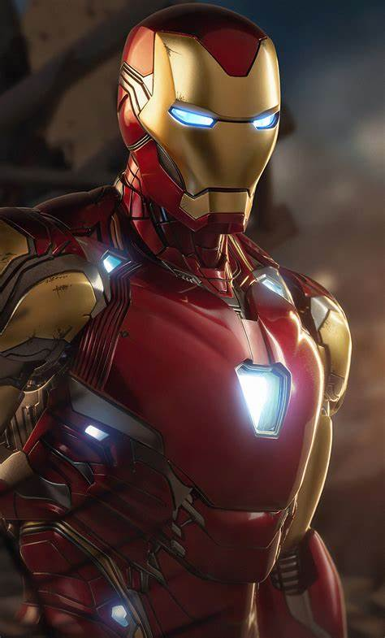

Genio multimillonario inventor, industrial y director ejecutivo de Industrias Stark Tony Stark fue herido de muerte en una zona de
guerra en Afganistán poco antes de ser secuestrado por terroristas. Stark construyó un traje blindado para escapar del cautiverio,
que a la vez sirvió como un dispositivo para mantener su corazón latiendo manteniéndolo con vida. Una vez que regresó a los Estados Unidos,
Stark se reinventó a sí mismo como el superhéroe Iron Man con armadura.
En momentos en que Tony Stark estaba indispuesto, otros hombres han continuado
con el legado de Iron Man. Dos veces lo hizo el mejor amigo de Tony Jim Rhodes, y el deber ha caído en manos del villano reformado Victor von Doom. Más recientemente,
el papel ha sido usurpado por el hermano adoptivo de Tony, Arno Stark.
